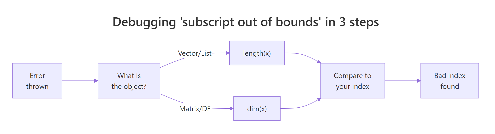

R Error: 'subscript out of bounds', Find Which Index Is Wrong Instantly
Error in x[[i]] : subscript out of bounds means R tried to reach an element at a position that does not exist, the index is larger than the object's length, or the row or column is past a matrix's dimensions. This guide shows how to find the bad index in ten seconds and stop it from coming back.
What does 'subscript out of bounds' actually mean?
The error fires when [[ or a matrix subscript asks for an index that is not there. R raises an error instead of silently returning NA, so you know something is wrong, but the message does not tell you which index is the culprit. The fastest way to learn the pattern is to trigger the error on purpose and read the size of the object that rejected you.
The vector has 3 elements, so slot 5 does not exist. [[ is designed to extract exactly one element, and there is no meaningful "single NA element" for R to return, so it throws instead. That is the entire mental model: the slot is empty, and the operator refuses to invent a value for it.
[ indexing happily returns NA for out-of-range positions. Double-bracket [[ indexing and matrix subscripts treat the same request as an error because they promise a single concrete value.Try it: Trigger the error yourself on a length-4 vector by asking for index 10. Wrap the call in tryCatch() so the page keeps running.
Click to reveal solution
Explanation: ex_v[[10]] asks for a tenth element that does not exist. tryCatch() captures the simpleError object, and conditionMessage() returns the error text as a string.
Which operators and objects trigger this error?
Three combinations of operator and object raise "subscript out of bounds": [[ on a vector or list, a matrix row/column subscript, and a data.frame row subscript. Each one rejects an impossible index the same way, but the shape you need to compare against is different.
Each block asks for a slot that does not exist, and each one raises the same error. The operators differ, but the reason is identical, R is being asked to extract a single value from a position that has no value.
Notice what single-bracket indexing would do in the vector case: nums[4] returns NA with no warning at all. That quietness is why off-by-one bugs can survive in production code for months.
x[10] probably feels like "index error territory", but in R, x[10] on a short vector is silent. If you need the crash as a safety net, reach for [[ instead.Try it: Build a 2x2 matrix and trigger the error by asking for row 3. Save the error message to ex_mat_err.
Click to reveal solution
Explanation: The matrix has 2 rows, so asking for row 3 fails. Matrix subscripts are strict in the same way [[ is, they must point to a real cell.
How do you find which subscript is wrong instantly?
The error message in R is famously uninformative, it never tells you which index is the bad one. You find it with a two-step recipe: look up the object's size, then compare the size to the index you used. Ten seconds of length() or dim() beats five minutes of guessing.

Figure 1: Three quick checks that reveal the bad subscript.
Let's wrap that recipe in a small helper you can paste into any debugging session. It prints the object's shape, the index you passed, and a clear "out of bounds by how much" verdict.
Read the output line by line. The vector has length 3, you asked for 5, you are over by 2. The matrix has 2 rows, you asked for row 5, you are over by 3. Those numbers are exactly the arithmetic you need to fix the offending loop or off-by-one slip.
str(x) prints the class, length, dimensions, and the first few values of any object. It is faster than calling length(), dim(), and class() separately, and it works on nested lists.Try it: Print the length of your object and your attempted index side by side in one line so you can see the mismatch immediately.
Click to reveal solution
Explanation: A single cat() with sep = "" keeps the output compact. In real debugging, drop this line right before the failing subscript and the mismatch is obvious.
Why does 1:length(x) cause off-by-one bugs?
The single most common trigger in real R code is a loop that writes 1:length(x). It looks correct for a non-empty vector, but the moment length(x) is zero, 1:0 expands to c(1, 0), two iterations on an empty object, and the first x[[1]] crashes. seq_along(x) solves it in one word.
1:length(empty) produced c(1, 0), so the loop iterated twice on an empty vector and crashed on the first x[[1]]. seq_along(empty) returns integer(0), and the for loop runs zero times, which is exactly what you want. This is the classic unit-test-passes-but-production-fails pattern, your tests use a non-empty vector, production hands you an empty one, and the crash ships.
seq_along(x) or seq_len(n) wherever you would have written 1:length(x). Both produce an empty iterator on empty input rather than the infamous c(1, 0), and your future self will stop getting paged for this.Try it: Rewrite the body of ex_loop to use seq_along(ex_xs) instead of 1:length(ex_xs), and confirm it returns 0 for an empty vector.
Click to reveal solution
Explanation: seq_along(integer(0)) is integer(0), so the loop runs zero times when xs is empty. For non-empty vectors it behaves exactly like 1:length(xs).
How do you add bounds checks to prevent it?
Once you know which lines can trip, you wrap them in a guard. Three patterns cover almost every real case: an inline if (i <= length(x)) check, a reusable safe_get() helper that returns a default, and purrr::pluck() for deeply nested lists.
safe_get() guards three failure modes at once: an NA index, an index below 1, and an index past length(x). If any of them are true, it returns the default, otherwise it uses [[ to extract the real element. Notice how the is.na(i) check comes first: the short-circuit || means the later comparisons never run on an NA, which would otherwise return NA instead of TRUE and sneak a crash through.
The design rule is crash at the edges, trust the middle: validate indices at the points where user input, file data, or loop math enters your function, and then trust the core loop to do its work without checks at every access.
pluck(x, i, .default = NA) does the same job as safe_get() and handles deeply nested lists like pluck(config, "db", "host", .default = "localhost") without a cascade of if statements.Try it: Write ex_get(x, i) that returns "bad index" when i is NA or out of range, otherwise returns x[[i]].
Click to reveal solution
Explanation: The guard is the same three checks as safe_get(): NA, below 1, above length. Ordering is.na(i) first matters, it short-circuits before the numeric comparisons, which would return NA and break the if.
Practice Exercises
Exercise 1: Fix a crashing pair-finder
The function below looks for pairs of numbers that sum to target. It works on normal input but crashes with "subscript out of bounds" when x has 0 or 1 elements. Find the bug and fix it. Your fix should return an empty list (not crash) for inputs shorter than 2.
Click to reveal solution
Explanation: Two bugs had to be fixed together. First, 1:length(x) expands to c(1, 0) on empty input, the if (n < 2) return() guard short-circuits both the empty and single-element cases. Second, (i + 1):length(x) becomes 2:1 = c(2, 1) on a length-1 vector, so even if you got past the empty case, it would crash, seq.int(i + 1, n) together with the early return handles both. Variables use the my_ prefix so the exercise does not clobber anything in the tutorial state.
Exercise 2: Build a diagnostic wrapper
Write explain_bounds(expr, x) that runs expr (passed as a quoted R expression), catches any "subscript out of bounds" error, and prints the shape of x plus the exact error message. If expr runs without error, it should return the result. Use tryCatch() and eval().
Click to reveal solution
Explanation: quote(scores[[5]]) captures the call without running it, so eval() decides when to run it. The error handler branches on whether x has dimensions (matrix / data.frame) or just a length (vector / list) and prints the relevant shape information alongside the original error message.
Complete Example: Safe row extraction from a data.frame
Let's combine every pattern from this post into one utility you can reuse: a function that extracts a row from a data.frame and returns a row of NAs if the index is out of bounds. It guards against NA indices, negative indices, and indices past nrow().
safe_row() pre-builds an NA template once (na_row) so the fallback keeps the original data.frame's column types, important for downstream code that expects age to be numeric and name to be character. The three checks, is.na, below 1, above nrow(df), are exactly the same three from safe_get(), just using nrow instead of length. The pattern scales to any rectangular object.
Summary
| Trigger | Example | Fast fix |
|---|---|---|
[[ past vector/list length |
scores[[10]] on length-3 |
Check length(x) first, use safe_get() |
| Matrix row/col out of range | mat[5, 2] on 2x3 |
Check dim(mat) first, use i <= nrow(mat) |
data.frame row past nrow() |
df[[10, 1]] on 3 rows |
safe_row(df, i) with NA fallback |
1:length(x) on empty input |
for (i in 1:length(empty)) |
Use seq_along(x) or seq_len(n - 1) |
| NA index | x[[NA]] |
Guard with is.na(i) before comparison |
References
- Wickham, H., Advanced R, Chapter 4: Subsetting. Link
- R Core Team, An Introduction to R, Section 6: Lists and data frames. Link
- Base R help page:
?"[[" - purrr documentation,
pluck()reference. Link - R source code,
src/main/subscript.c(where the error is raised). - Stack Overflow canonical: "What does 'subscript out of bounds' mean in R?" Link
Continue Learning
- R Common Errors, the full reference covering the other 50 errors R throws at you.
- R Error: undefined columns selected, the data.frame cousin of this error, triggered by bad column names.
- R Error: replacement has length zero, the NA assignment bug that shows up in the same debugging sessions.